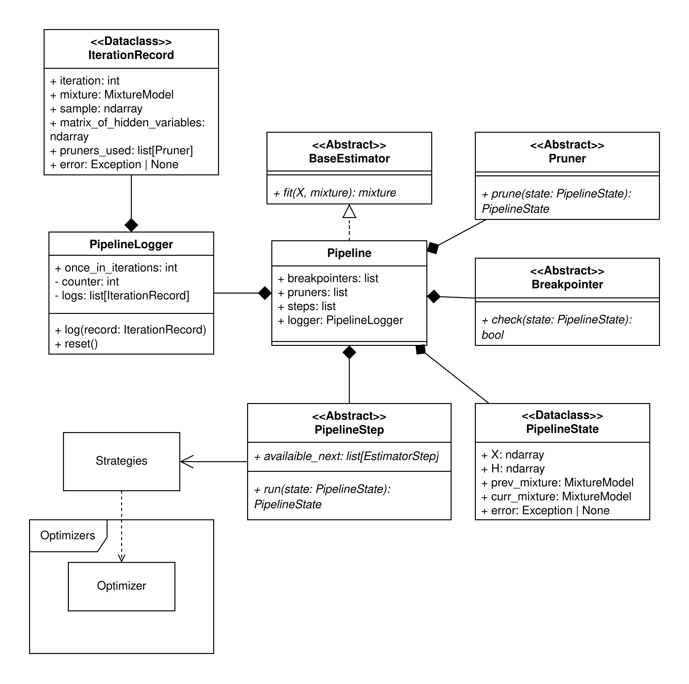

Iterative#
Предоставляет необходимую функциональность для работы с итеративными алгоритмами, такие как:
Оркестратор
PipelineШаги алгоритма и соответствующие им классы для конфигурации
Pruner’ы
Breakpointer’ы
{kind=link}

Классы#
Pipeline#
Конкретный класс, реализующий итеративные алгоритмы оценки параметров смеси распределений.
Атрибуты
+ breakpointers: list[Breakpointer]
Условия остановки алгоритма. Остановка срабатывает, если хотя бы один из Breakpointer’ов подал сигнал.
+ pruners: list[Pruners]
Классы удаляющие компоненты из смеси по некоему условию. Отрабатывают каждый последовательно.
+ steps: list[PipelineStep]
Список последовательности шагов, на каждой итерации алгоритм будет по ним проходить начиная с 0 шага и заканчивая последним.
+ logger: PipelineLogger
Логгер сохраняющий информацию об итерациях алгоритма.
Методы
+ fit(X, mixture): mixture
Выполняет каждый элемент из
stepsпоследовательно. В конце каждой итерации идет проверка на выполнение условия остановки и, если остановка не нужна, проверка на удаление компоненты.Для передачи данных между шагами работает с объектом класса
PipelineState:
Мысли
Для поддержки своего пайплайна для каждой компоненты можно добавить что то вроде
global_stepsкоторые отрабатывают для каждой компоненты иlocal_stepsсодержащий пайплайны для каждой компоненты (а что если идет сначала шаг изglobal_step, а потом шаг изlocal_stepsа потом снова изglobal_steps?)Если так делать кстати, то получится распараллелить каждую итерацию (очень предпочтительно!) Однако т.к. каждый из шагов возвращает новый
PipelineState, то придется это переделать (иначе распараллелить не получится)
Breakpointer#
Абстрактный класс, занимающийся остановкой алгоритма по некоему условию.
Атрибуты
Методы
+ check(state: PipelineState): bool
Абстрактный метод, который по состоянию и некоторому условию понимает, нужно ли остановить алгоритм или нет.
Pruner#
Абстрактный класс, занимающийся удалением лишних компонент смеси.
Атрибуты
Методы
+ prune(state: PipelineState): PipelineState
Абстрактный метод, реализующий удаление компоненты из смеси по условию.
Есть два варианта:
Метод
pruneбудет возвращать контекст с уже измененной смесью, откуда удалена компонента/ыМетод
pruneбудет возвращать массивidx_componentуказывающий на то, какие компоненты надо удалить. Этот случай необходим, если я решу сделать композицию алгоритмов.
Сейчас реализован вариант 1.
PipelineStep#
Абстрактный класс для шагов алгоритмов.
Атрибуты
+ available_next: list[PipelineStep]
Приватный атрибут, содержащий информацию о том, какой шаг может идти следующим. Надо чтобы последний шаг замыкал итерацию так, чтобы возвращал то, что может обработать первый шаг итерации.
Например:
EStep -> MStep,MStep -> EStep.Возможно стоит заменить на
return_value_namesили что то вроде того, чтобы зашивать информацию о доступных следующих шагах в возвращаемые атрибуты.
Методы
+ run(state: PipelineState): PipelineState
Абстрактный метод, запускающий шаг алгоритма. Внутри себя может работать с контекстом, записывая туда информацию необходимую для следующего шага.
Доступные шаги
ExpectationStep
Шаг оценки скрытых параметров, возвращающий матрицу ответственностей, содержащей вероятности и использующуюся в последующих шагах.
MaximizationStep
Шаг, который оценивает параметры по выбранной стратегии. Конфигурируется пользователем.